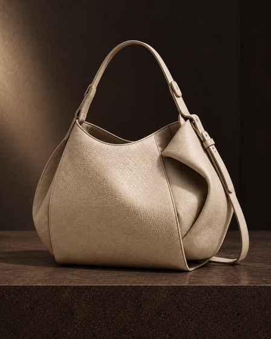
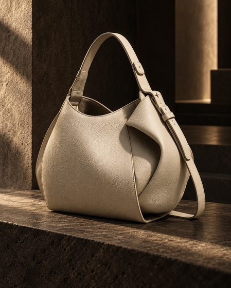
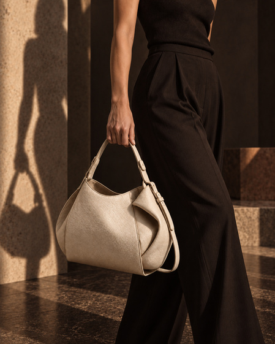

La pieza
Diseño contemporáneo.
Una nueva historia.
La Iconic representa el punto de encuentro entre diseño, material y experiencia. No se presenta como un producto aislado, sino como el resultado visible de un proceso de transformación.


Material · Transformación
De la materia
al diseño.
Descubre cómo Alquimia transforma materiales existentes en accesorios contemporáneos.
Descubre la transformación